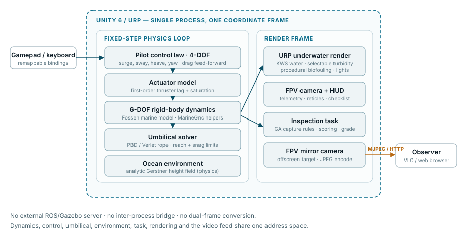
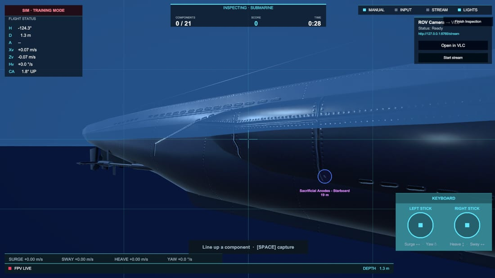
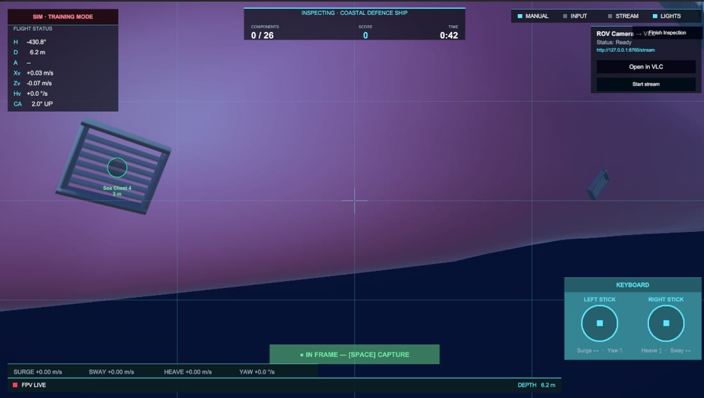
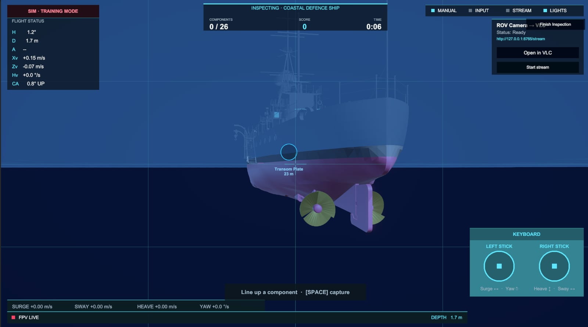

A Self-Contained Unity Simulator for Light Inspection-Class ROV Pilot Training
¹ ROView project — affiliation to be completed.
Keywords — Remotely Operated Vehicle, inspection-class ROV, Unity, underwater robotics, ROV pilot training, biofouling, hull inspection, tether simulation.
1. Introduction
Inspection-class (also called observation-class or "light") ROVs occupy a distinct niche from the large work-class vehicles used in subsea inspection, maintenance, and repair (IMR). Where a work-class ROV is a heavy underwater vehicle–manipulator system (UVMS) deployed from a vessel with a launch-and-recovery system and dual-pilot crews, an inspection-class ROV is a compact, tethered, hand-deployable platform of the order of tens of kilograms, flown by a single pilot for visual survey, class inspection, hull-condition and biofouling assessment, search, and light intervention. The piloting skills, the failure modes, and the operational economics are correspondingly different.
The case for simulator-based training applies just as strongly here as it does for work-class vehicles. Real dives require suitable water, acceptable weather and current, access to a host vessel or structure, and carry the ever-present risk of snagging or severing the umbilical against the structure being inspected. A virtual environment lets a trainee build the core competencies — spatial awareness against a hull, station-keeping in current, camera framing for defensible inspection imagery, and umbilical management — without any of these constraints.
The principal challenge, as in the work-class case, is the reality gap: a simulator is only useful for training if its underwater imagery, vehicle response, and task structure are faithful enough that skills transfer. Poor light propagation, an over-idealised vehicle that holds position without effort, or a task with no inspection content all undermine the training value.
Recent work has demonstrated that game-engine renderers close the visual side of this gap convincingly. Boniface et al. (2024) present a high-fidelity Unity simulator for the work-class Merlin ROV, coupling Unity's renderer to a ROS/Gazebo back end that computes the marine dynamics via the UUV Simulator hydrodynamic plugin (Manhães et al., 2016), exchanging state over a TCP/IP bridge. Earlier open-source simulators — UWSim (Prats et al., 2012) and the Gazebo-based UUV Simulator — established the physics back end but were limited by the graphical fidelity of their rendering engines.
This paper takes the same motivation but a different architecture and a different vehicle class. We present ROView, an inspection-class ROV training simulator in which every subsystem — kinematics and dynamics, umbilical physics, underwater rendering, the inspection task, scoring, and the video stream — is implemented natively inside Unity 6 (URP), with no external robotics middleware. Removing the ROS/Gazebo server eliminates the inter-process bridge, the dual-coordinate-frame conversions, and the server-rate/ client-rate mismatch that the split architecture must interpolate around, and it lowers the barrier to entry to a single executable on a mid-range PC. The contributions are:
- A single-process, engine-native simulation architecture for a tethered inspection-class ROV, contrasted against the ROS/Gazebo-plus-engine split used for work-class vehicles.
- A 4-DOF attitude-stabilised pilot model over a 6-DOF rigid-body marine-craft dynamic model (Fossen, 2011/2021), with first-order thruster lag and saturation, reproducing the handling of commercial observation ROVs.
- A physically based underwater visual pipeline with player-selectable turbidity/visibility and a procedural, waterline-aware biofouling shader keyed to a standard Level-of-Fouling scale, enabling hull-condition and marine-growth assessment training.
- A structured photo-survey inspection task over a vessel's General-Arrangement components, with occlusion-aware capture rules, quality-weighted scoring, and automatic grading.
- A physically simulated finite-reel umbilical with snag and reach constraints — a core inspection skill absent from work-class training scenarios.
The remainder of the paper follows the layout of the work-class study for direct comparison: Section 2 gives the vehicle model, Section 3 the in-engine simulation architecture, Section 4 the visual configuration, Section 5 the inspection task and umbilical model, Section 6 results and discussion, and Section 7 conclusions.
 (a)
(a)
 (b)
(b)
2. ROV Simulator Model
2.1 Kinematics
We model the inspection ROV as a rigid body, not a UVMS: a light observation vehicle carries no manipulator arms, so the coupled vehicle–manipulator dynamics of the work-class case collapse to the standard 6-DOF marine-craft model. The earth-fixed pose is
with position and orientation (Euler angles; a quaternion form as in Fossen (2011) may be substituted without loss of generality). The body-fixed velocity vector is
where are surge, sway and heave and are roll, pitch and yaw rates. The kinematic transformation is
with the body-to-NED rotation and the Euler-rate transform (Fossen, 2011). In the implementation the world frame is Unity's left-handed -right, -up, -forward convention; body velocities are mapped accordingly (surge , sway , heave ), and the helper library MarineGnc provides the skew, Coriolis, restoring-force, and damping operators used below.
Attitude stabilisation. Commercial inspection ROVs are strongly metacentrically stable and are flown "flat": the default control scheme exposes only surge, sway, heave and yaw to the pilot, while roll and pitch are passively held by the separation of the centres of gravity and buoyancy. We reproduce this directly: roll and pitch are constrained at the rigid-body level, so the controlled configuration is four-dimensional,
even though the underlying dynamics remain 6-DOF (residual roll/pitch restoring behaviour is still present in the model and in the camera response).
2.2 Dynamics
Following Fossen (2011) and dropping the manipulator terms of the work-class UVMS, the body-frame equation of motion is
where:
- is the rigid-body plus added-mass matrix;
- is the Coriolis–centripetal matrix, formed in
MarineGnc.CoriolisMatrixfrom the symmetric part of and the current ; - is the hydrodynamic damping, modelled diagonally with a linear and a quadratic (drag) term per axis (
MarineGnc.DampingMatrix); - is the restoring (hydrostatic) generalised force from weight and buoyancy and the offsets of the centres of gravity and buoyancy (
MarineGnc.RestoringForces); - is the thruster wrench and the environmental disturbance (current, surge near the surface).
Hydrostatics and near-neutral buoyancy. The reference vehicle is parameterised as a compact observation ROV: mass , displaced volume derived from the mass for near-neutral buoyancy with a small negative bias so the vehicle sinks gently when unpowered,
with sea-water density and . Buoyancy and drag are scaled by a smoothed submerged fraction so the vehicle transitions continuously through the surface during deployment rather than switching discontinuously. Above the waterline the vehicle falls under its dry weight with an air-drag term; fully submerged it experiences buoyancy, isotropic linear drag, an additional vertical-drag term, and a yaw damping term.
Actuation. The thruster wrench is produced by a first-order actuator model (RovActuatorModel) that low-pass filters the commanded wrench to the applied wrench with time constant and saturates each axis:
The default per-axis limits are in N and N·m for . This lag reproduces the finite spin-up of real thrusters and prevents instantaneous velocity changes.
2.3 Pilot control law
The pilot interface implements the Deep Trekker-style dual-stick mapping common to inspection ROVs:
- left stick: surge (forward/back) and yaw;
- right stick: heave (throttle up/down) and sway (strafe).
Each axis is shaped (optional squared response for fine control near centre), low-pass filtered (time constant ), and scaled to a commanded body velocity. The design-speed envelope is
A velocity-tracking controller with drag feed-forward generates the thruster command, e.g. for surge
where the feed-forward term cancels hydrodynamic drag so steady-state tracking is exact, and the tracking gain is blended between a low "coast-brake" value at neutral stick and a high value at full stick. The effect is that releasing the stick lets the vehicle coast on its drag (as a real ROV does) rather than braking artificially, while full-stick commands track crisply. Yaw is rate-controlled with idle damping that settles residual rotation when no yaw is commanded. Two safety constraints complete the loop: upward heave authority fades as the vehicle nears the surface, and a hard surface-breach constraint prevents the body from rising above the (wave-following) water surface.
3. In-Engine Simulation Architecture
3.1 Single-process design
The defining architectural choice of ROView is that there is no external simulation server. The work-class simulator of Boniface et al. (2024) runs Gazebo headless under ROS Melodic on Ubuntu to compute marine dynamics, runs Unity as a rendering client, and bridges them with the ROS-TCP-Endpoint / ROS-TCP-Connector pair, accepting the resulting cross-process latency and the need to reconcile Gazebo's right-handed frame with Unity's left-handed frame. That split is well-motivated for a work-class UVMS, where the hydrodynamic and manipulator dynamics are heavy and a validated Gazebo plugin already exists, and where remote operation from an Onshore Control Centre is the real-world use case being mirrored.
For a light inspection-class vehicle the trade-off inverts. The rigid-body, manipulator-free dynamics of Section 2 are cheap enough to integrate inside the engine's own fixed-step physics loop, so we do exactly that. All dynamics, control, the umbilical solver, the inspection logic, and the rendering share a single address space and a single, consistent coordinate frame. This removes the bridge, the dual-frame conversions, and the server/client frame-rate interpolation entirely, and reduces the deployment footprint to one application.
A lightweight bootstrap (GameBootstrap) assembles the runtime scene: it wires the input system, discovers inspectable vessels, constructs the menu and HUD layers, and on mission start drives the deploy sequence (drop, splash, settle), attaches the umbilical, enables the pilot controller, and begins the inspection mission. State flows directly through component references rather than over a network topic, but the logical decomposition still mirrors a robotics stack: sensing (telemetry), guidance/navigation/control helpers (MarineGnc, the pilot law), actuation (RovActuatorModel), and the environment model (OceanEnvironment).

3.2 Fixed-step integration and state update
Vehicle dynamics, the umbilical solver, and the safety constraints run in the engine's fixed-step physics callback so that integration is decoupled from the render frame rate. Each fixed step: the pilot commands are filtered; buoyancy, drag and restoring water effects are applied; the pilot thruster forces are applied through the actuator model; idle yaw damping and the surface-breach constraint are enforced; and finally velocities are clamped to the safety envelope. The umbilical solver (Section 5.2) runs after the pilot step, with configurable sub-stepping, so it constrains the post-thrust vehicle state.
Navigation telemetry for the HUD — heading, depth (from the wave-aware ocean model), altitude above the seabed (downward ray-cast), and surge/heave/yaw-rate — is sampled once per render frame, decoupled from the physics step.
3.3 Environment model
A scene-wide OceanEnvironment coordinates sea level and wave state and exposes surface-height and submerged-depth queries used by buoyancy, the umbilical, deployment, and audio. It offers calm, inspection and open-ocean presets; inspection missions force a calm "inspection seas" preset (gentle Gerstner swell) so that station-keeping is trainable but the world still reads as live water. Crucially, the analytic Gerstner surface is retained as the physics height field even though it is not the visible water — the visible surface and underwater look are rendered by the physically based water system described next, while buoyancy and the umbilical continue to sample the analytic surface, keeping the gameplay physics deterministic and independent of the rendering layer.
3.4 Remote video stream
Mirroring the remote-access motivation of the work-class WebSocket bridge, ROView exposes the pilot's FPV camera as an outbound video feed (RovVideoStream). A mirror camera renders the FPV view to an offscreen target at a fixed cadence (default , 20 fps, JPEG quality 70), and the frames are served as a multipart MJPEG stream over HTTP/TCP on a loopback port. Any standard client — VLC or a web browser — can subscribe, so an instructor or observer can watch the dive on a second screen without touching the simulator process. Capturing through a manually rendered mirror camera keeps the on-screen feed smooth and independent of the stream frame rate.
4. Visual Configuration in Unity
The visual goal differs from the work-class deep-water scenario. A work-class IMR dive at ~300 m is almost entirely dark, illuminated only by the vehicle's spotlights; the dominant visual problem is light propagation in near-black, turbid water. An inspection-class survey is more typically a shallower hull or harbour-structure inspection in variable, often degraded visibility, where the dominant problem is legibility of the hull and its fittings under turbidity and artificial light. ROView targets this regime and, unlike the work-class study, makes the visibility itself a trainable difficulty axis.
The project uses Unity 6 (6000.4.7f1) with the Universal Render Pipeline (URP) rather than HDRP. URP was chosen deliberately to keep the simulator runnable on commodity and lower-end hardware — consistent with a free, widely distributable inspection-training tool — accepting a more constrained effect budget than the HDRP/ray-traced configuration used for the work-class showcase.
4.1 Physically based water and selectable turbidity
The visible surface and the underwater volume are rendered by a physically based water system (KWS / KriptoFX) integrated through a thin bridge (KwsOceanBridge). The bridge hands the surface and the underwater pass to the water system while keeping the analytic Gerstner surface as the invisible buoyancy/height provider (Section 3.3), and it pins the infinite-ocean pivot to sea level every frame so the waterline stays correct as the vehicle dives.
The key training feature is that underwater visibility is a player-selected parameter, not a fixed scene property. An InspectionVisibility setting maps a difficulty slider to a metric view distance from roughly (very clear) down to (very murky), persisted between sessions. Every frame the bridge pushes the chosen transparency to the water system and additionally scales the turbidity colour upward as difficulty increases, so a "hard" dive is genuinely murkier — shorter range and heavier scatter — rather than merely darker. This lets an instructor rehearse the same hull survey across a spectrum of water clarity.
4.2 Vehicle lighting
The ROV carries a configurable spotlight rig (RovLightsController): a wide central flood for crosshair fill plus two narrower side accents, warm-white, with soft shadows on the side units. Because the inspection scene is not pitch-black by default, the lights read as working illumination that picks out hull texture, biofouling relief, and fittings, rather than being the sole light source. The rig is toggleable and is the primary cue the pilot uses when working close to the hull in low visibility.
4.3 Procedural biofouling for hull-condition training
A distinctive inspection-class capability is marine-growth assessment, which has no analogue in the work-class IMR scenario. ROView applies a procedural, waterline-aware biofouling shader to vessel hulls (EnvironmentVesselBiofouling + the VesselBiofoulingURP material), generating slime, weed, and barnacle layers with niche/edge-seeking growth (growth concentrates on weld seams, protrusions, and complex geometry) and a sea-level-referenced waterline so fouling correctly intensifies below the boot-top and toward the keel.
The severity is exposed as a discrete Level-of-Fouling (LoF 0–5) rank, the field convention for visual hull-condition assessment, surfaced alongside a simplified Fouling Rating tier and a plain description grounded in the US Navy NSTM Ch. 081 Fouling Rating scale (clean → slime film → weed/grass → light barnacles and tubeworms → heavy calcareous growth → composite). The pilot/instructor selects the fouling level on the launch screen; it maps to a shader fouling-amount knob and is applied live to the selected vessel. Training a pilot to recognise and image these conditions is itself an inspection objective, and the configurable severity makes that repeatable.
4.4 Post-processing and particulates
Underwater immersion is completed with marine-snow particulates and an underwater colour/scatter treatment, plus a tuned URP post-processing stack (camera underwater effect, exposure, and scatter consistent with the selected turbidity). As in the work-class study, these effects double as a perceptual smoother: grain and blur mask residual hard edges in the volumetric haze, so visibility can be reduced for difficulty without revealing rendering artefacts.

(a)
(b)5. Training Task and Umbilical Model
5.1 Photo-survey inspection task
Where the work-class paper demonstrates control integration against a static subsea installation, ROView embeds an explicit, scored inspection task that constitutes the training objective. A mission targets one selected vessel and a set of General-Arrangement (GA) inspection points — hull, propulsion, rudder, anode, sea-chest, thruster, sensor, and marking categories — each placed on the vessel and given a capture radius and base point value. Markers may be hand-authored on a hull or seeded automatically.
The pilot must locate each component and photograph it from the FPV camera. A component is judged capturable when it is (i) within its (globally tightened) capture range, (ii) on-screen inside a viewport-inset margin and in front of the camera, and (iii) not occluded by intervening geometry — with the vessel's own hull and the ROV body explicitly excluded from occlusion so a fitting is never blocked by the surface it sits on. A capture-quality score combines how centred the component is in frame with how close the vehicle is, rewarding deliberate, well-framed inspection imagery rather than distant snapshots:
Pressing the capture control grabs a clean (HUD-free) snapshot for the results gallery and marks every newly satisfied component in frame. The mission ends when all components are captured, and an overall grade (S–D) is computed from a weighted combination of coverage (completion) and score ratio:
Combined with the selectable visibility and fouling level, this yields a parameterised difficulty space: the same vessel can be surveyed in clear water with a clean hull, or in 5 m visibility against composite fouling that obscures the very fittings the pilot must find and image.

5.2 Simulated umbilical (tether)
Umbilical management is a defining skill of tethered inspection piloting and a leading cause of lost or aborted dives, yet it is absent from the work-class training scenario. ROView simulates the umbilical explicitly (RovTether) as a sub-stepped Position-Based-Dynamics (Verlet) rope: a strand of point masses, each integrating near-neutral buoyancy and current-relative drag (with a depth falloff and a current expressed in knots), pulled to rest spacing by inextensible distance constraints, and swept against world geometry so the cable drapes over, wraps around, and snags on the structure without clipping.
The finite reel is modelled faithfully: a fixed length is paid out at deployment from a topside surface anchor, up to a reel capacity (defaults: 40 m deployed, 100 m capacity), and the pilot pays out or reels in. Reaching the end of the cable is enforced as a hard reach limit, not a soft tug: the length of cable actually required to reach the vehicle is measured by "string-pulling" the taut route around the geometry, so a cable that has wrapped a propeller or hull edge genuinely shortens the reachable set. When the vehicle reaches that limit, the outward component of its velocity is cancelled while lateral and inward motion stay free, so the pilot can always back out. The simulator distinguishes a reach limit (a near-straight cable that has simply run out, which auto-pays more line if the reel has it) from a snag (a route that detours well past the straight line and cannot be paid through, requiring the pilot to back out or reset). The HUD surfaces deployed length, reel fraction, strain, and snag state.
6. Results and Discussion
6.1 Qualitative outcome
ROView runs the complete inspection-class pilot-training loop in a single Unity (URP) process: launch-menu vessel selection and fly-over, choice of visibility and hull-fouling difficulty, deployment and water entry, 4-DOF piloting with a tethered umbilical, a scored photo-survey of the vessel's General-Arrangement components, and a graded results screen with the captured imagery — all without any external ROS/Gazebo server, and with an optional MJPEG stream for a second observer. The vehicle handling exhibits the qualities of a light observation ROV: near-neutral buoyancy with a gentle sink when unpowered, coasting on hydrodynamic drag when the sticks are released, level attitude hold, and authority that fades realistically near the surface.
6.2 Performance methodology
Note. The numeric frame-time and frame-rate results below are placeholders to be filled in from measurements on the target hardware. The architecture and the toggle set that should be measured are described here so the evaluation mirrors the methodology of the work-class study (Boniface et al., 2024), which reported per-effect frame/render times for a baseline plus incremental visual features.
The recommended performance protocol, by analogy to the work-class study, is to measure total frame time and render time on a representative mid-range GPU while toggling the dominant cost centres independently from a fixed baseline:
| Configuration | Total frame time (ms) | Render time (ms) |
|---|---|---|
| Baseline (no particulates, no water underwater pass, no post) | TODO | TODO |
| + Physically based water + underwater pass | TODO | TODO |
| + Marine-snow particulates | TODO | TODO |
| + Post-processing stack | TODO | TODO |
| + Spotlight shadows | TODO | TODO |
| + Umbilical solver (N sub-steps, M nodes) | TODO | TODO |
| Full configuration | TODO | TODO |
Two cost centres are specific to this simulator and worth isolating: the selectable turbidity (reducing visibility shortens the rendered underwater range and tends to reduce cost while increasing difficulty — an unusually favourable trade), and the umbilical solver, whose cost scales with node count, sub-steps, and the number of line-of-sight probes spent measuring the taut routed length (open water costs a single probe; only a wrapped cable spends more). The design target is to sustain interactive frame rates on mid-range hardware with the full inspection configuration enabled; the choice of URP over HDRP is the primary lever supporting that target on lower-end machines.
6.3 Discussion
The single-process design trades the modularity and validated-plugin reuse of a ROS/Gazebo back end for simplicity, determinism, and a far lower barrier to entry. For a light inspection-class vehicle whose manipulator-free dynamics are inexpensive to integrate, this is the right trade: there is no inter-process latency to interpolate around, no dual-frame bookkeeping, and the whole simulator ships as one executable a trainee can run on a personal machine. The cost is that the dynamics are engine-native rather than reusing an externally validated hydrodynamic plugin; the model is grounded in the standard Fossen formulation and tuned to reproduce observation-ROV handling, but it is not claimed to be a validated digital twin of a specific commercial vehicle.
The inspection-specific features — selectable turbidity, procedural biofouling on a recognised severity scale, the GA photo-survey task with quality-weighted scoring, and the snag-aware umbilical — together address inspection-piloting competencies (visual search and framing in degraded visibility, hull-condition recognition, and tether management) that a work-class IMR scenario does not exercise. Inspired by the work-class study's observation that implementing hydrodynamics directly in a game engine is viable, ROView takes that approach to its conclusion for the inspection class by also bringing the task, the umbilical, and the streaming in-engine.
Limitations and threats to transfer validity include the absence of formal validation of the dynamic model against vehicle trials, the arcade-leaning capture rules (deliberately lenient to keep early training approachable), and the lack — at present — of sensor models beyond the camera (no sonar or positioning aids). The video stream is also currently local rather than a true remote-operation bridge.
7. Conclusion
This paper presented ROView, a high-fidelity training simulator for the light inspection-class ROV category, built entirely within Unity (URP) as a single self-contained process. In contrast to work-class simulators that split marine dynamics onto an external ROS/Gazebo server and use the game engine only for rendering, ROView integrates 6-DOF rigid-body marine dynamics, a 4-DOF attitude-stabilised pilot model with thruster lag, a physically simulated finite-reel umbilical with snag and reach constraints, a physically based underwater visual pipeline with player-selectable turbidity and procedural biofouling, and a scored General-Arrangement photo-survey task — all in one engine, on commodity hardware, free of robotics middleware. The result is a low-barrier, distributable tool aimed squarely at inspection-piloting skills: visual search and framing in degraded visibility, hull-condition and marine-growth recognition, station-keeping in current, and umbilical management.
Future work will: (i) validate the dynamic model against reference vehicle data and tighten the capture rules toward inspection-defensible imaging standards; (ii) add sensor models (e.g. imaging/profiling sonar and positioning) to broaden the trainable task set; (iii) extend the local MJPEG feed into a true remote-operation bridge for instructor-led, distributed sessions; and (iv) conduct a transfer-of-training study with trainee pilots to quantify skill acquisition. These steps aim to strengthen the bridge between virtual training and real-world inspection operations for the light-ROV community.
References
Antonelli, G., Fossen, T.I., and Yoerger, D.R. (2016). Modeling and control of underwater robots. Springer Handbook of Robotics, 1285–1306.
Boniface, P.O.H., Teigland, H., Saksvik, I.B., and Hassani, V. (2024). A high-fidelity Unity simulator for ROV pilot training. IFAC-PapersOnLine, 58(20), 481–486.
Fossen, T.I. (2011). Handbook of Marine Craft Hydrodynamics and Motion Control. John Wiley & Sons.
Fossen, T.I. (2021). Handbook of Marine Craft Hydrodynamics and Motion Control, 2nd ed. John Wiley & Sons.
KriptoFX (2024). KWS — Water System (Unity asset). Physically based water rendering with underwater effects.
Manhães, M.M.M., Scherer, S.A., Voss, M., Douat, L.R., and Rauschenbach, T. (2016). UUV Simulator: A Gazebo-based package for underwater intervention and multi-robot simulation. In OCEANS 2016 MTS/IEEE Monterey, 1–8. IEEE.
Naval Sea Systems Command. Naval Ships' Technical Manual (NSTM) Chapter 081 — Waterborne Underwater Hull Cleaning of Navy Ships (Fouling Rating scale).
Prats, M., Pérez, J., Fernández, J.J., and Sanz, P.J. (2012). An open source tool for simulation and supervision of underwater intervention missions. In 2012 IEEE/RSJ International Conference on Intelligent Robots and Systems, 2577–2582. IEEE.
Teigland, H., Hassani, V., and Møller, M.T. (2023). Application of model predictive control for a work class remotely operated vehicle. In 2023 IEEE Conference on Control Technology and Applications (CCTA), 466–471. IEEE.
Unity Technologies (2024). Unity 6 — Universal Render Pipeline (URP) documentation.
ROView · light inspection-class ROV training simulator · 2026. Generated from the project paper; figures are real photographs, in-sim captures, or hand-authored diagrams.